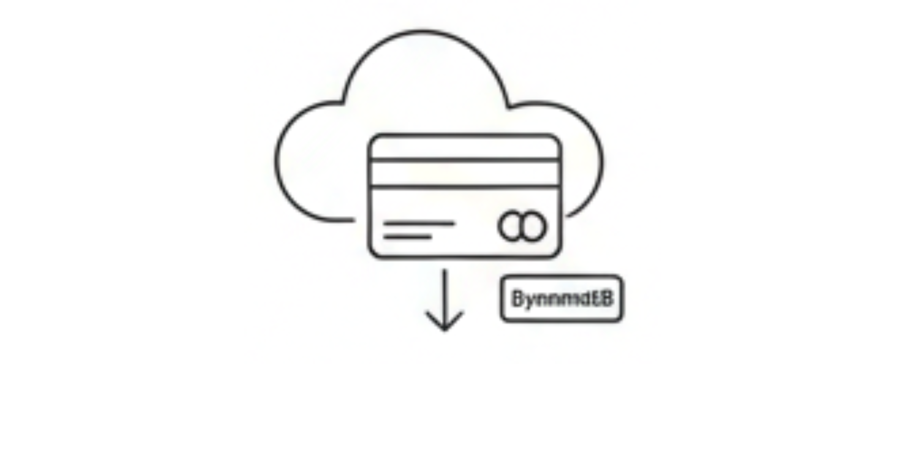

AI & Agents
LLMs, Automation,
and Intelligence
AI Resume Architect
 AI Healthcare Assistant
AI Healthcare Assistant

AWS Business Card Reader
 CoffeeBot Classifier
CoffeeBot Classifier
BIM & Digital Twins
Architecture, Engineering & Construction (AEC) Tech
 Hospital Facility Intelligence
Hospital Facility Intelligence
 Automated Clinical Dashboard
Automated Clinical Dashboard
 Hybrid BIM Logic
Hybrid BIM Logic
 Facial Recognition
Facial Recognition
Data Science & ML
Predictive modeling
and deep learning
 Fraudulent Job Detection
Fraudulent Job Detection
 Amazon Review Sentiment Analysis
Amazon Review Sentiment Analysis
 Twitter Sentiment Classification
Twitter Sentiment Classification
 Sentiment Analysis IMDb
Sentiment Analysis IMDb
Web & Analytics
Scraping, Dashboards & Full-Stack development
 React Digital Design Platform
React Digital Design Platform
 Shein Web Intelligence
Shein Web Intelligence
 Worldwide Skyscrapers Dashboard
Worldwide Skyscrapers Dashboard
 Personalized Recommender System
Personalized Recommender System